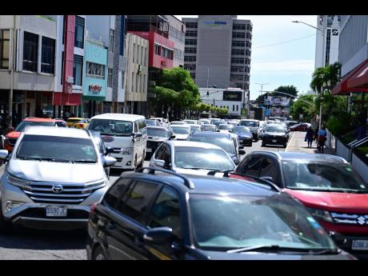

Take your Vitamins
September 29, 2026 by Jayden Bloomfield
After a weekend of partying, I spent the whole week sick and bedridden. Not sure if it's a bad cold or the flu...
Every day I lay in bed, reminiscing on the days I felt healthy. I have had a strict diet of panadol, medicine, water, and the occasional meal if my body would accept it.
Was it all worth it? Yes
I hate Kingston
October 2, 2026 by Jayden Bloomfield

Everything about Kingston is bad. Constant heat, heavy traffic, expensive food, expensive gas, even more expensive housing and no water. Sometimes I want to run away guh pick up farming. Plant some yam and banana. Raise two hog, build a chicken coop... wash clothes a riverside
Maybe a simpler life could be a more enjoyable one. Living out west, No phone, no A/C, no problem. Sounds thrilling actually... or maybe I'm just bored